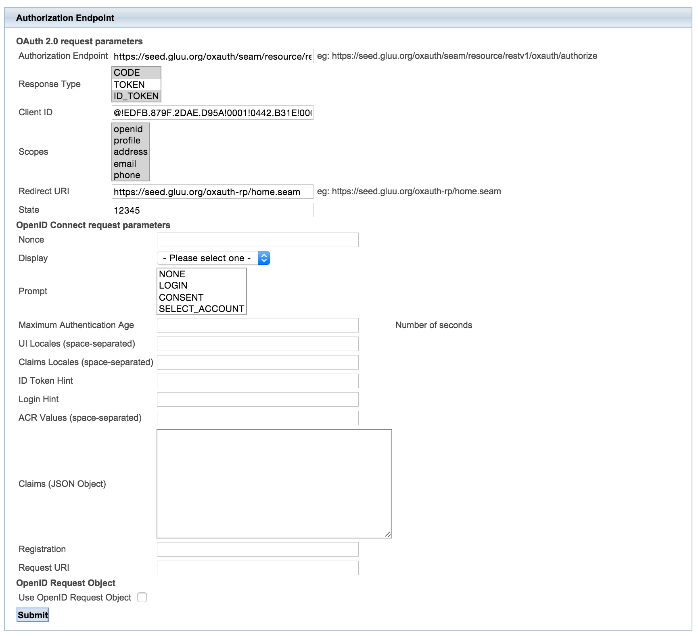
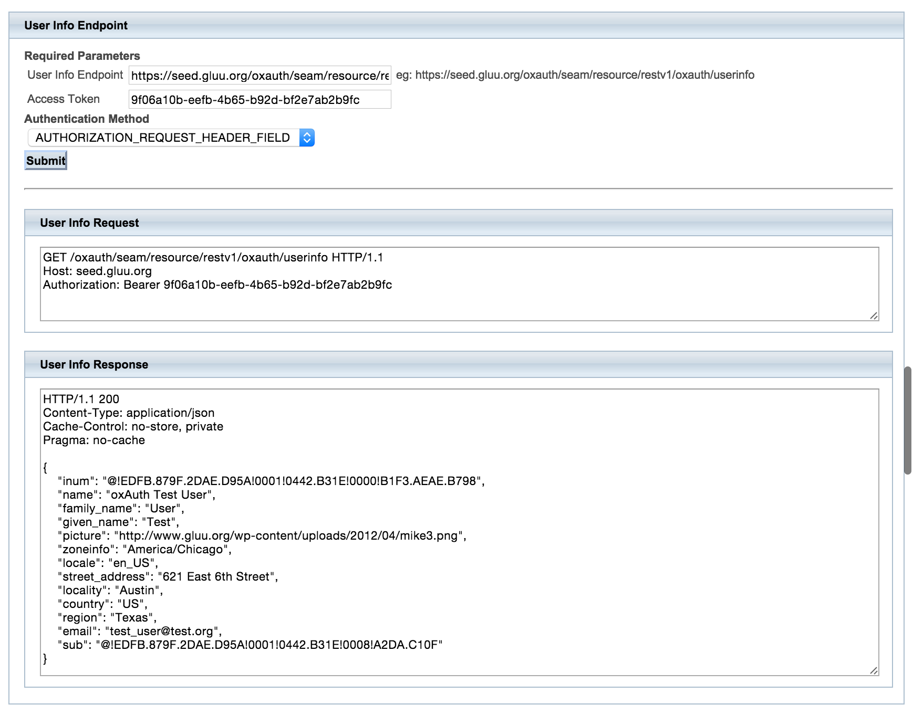
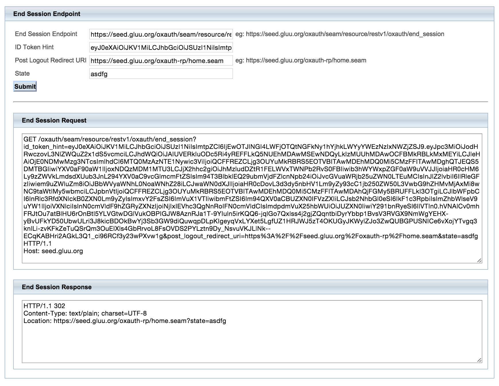

Overview#
OpenID Connect ("Connect") is a standard profile of OAuth2 which defines a protocol to enable a website or mobile application to send a person to a domain for authentication and required attributes (e.g. email address, first name, last name, etc.). OpenID Connect also provides some of the plumbing around authentication to automate how this happens. If a person is visiting a website for the first time, the process that OpenID Connect defines is 100% bootstrapable by the website. This is really critical for Internet scalability. To visit someone's website, or to send someone an email, you do not need to get the system administrators involved. Connect provides the same type of scalable infrastructure for authentication and authorization, and promises to define a base level domain identification.
Jargon (taxonomy)#
If you are familiar with SAML, there are many parallels in OpenID Connect, but the jargon (or "taxonomy") is different. For example, instead of attributes, we have "user claims". Instead of Service Provider (SP), we have "client". Instead of Identity Provider (IdP), it is an OpenID Provider (OP).
Discovery#
The first thing you want to know about any OAuth2 API is where are the endpoints (i.e. what are the uris where you call the APIs). OpenID Connect provides a very simple mechanism to accomplish this: OpenID Connect Discovery.
In order for an OpenID Connect Relying Party to utilize OpenID Connect services for an End-User, the RP needs to know where the OpenID Provider is. OpenID Connect uses WebFinger WebFinger to locate the OpenID Provider for an End-User.
Once the OpenID Provider has been identified, the configuration information for the OP is retrieved from a well-known location as a JSON document, including its OAuth 2.0 endpoint locations.
If you want to try a discovery request, you can make the following WebFinger request to discover the Issuer location:
GET /.well-known/webfinger?resource=https%3A%2F%2Fidp.gluu.org&rel=http%3A%2F%2Fopenid.net%2Fspecs%2Fconnect%2F1.0%2Fissuer HTTP/1.1
Host: idp.gluu.org
HTTP/1.1 200
Content-Type: application/jrd+json
{
"subject": "https://idp.gluu.org",
"links": [{
"rel": "http://openid.net/specs/connect/1.0/issuer",
"href": "https://idp.gluu.org"
}]
}
Using the Issuer location discovered, the OpenID Provider's configuration information can be retrieved.
The RP makes the following request to the Issuer https://
GET /.well-known/openid-configuration HTTP/1.1
Host: idp.gluu.org
HTTP/1.1 200
Content-Type: application/json
{
"issuer": "https://idp.gluu.org",
"authorization_endpoint": "https://idp.gluu.org/oxauth/seam/resource/restv1/oxauth/authorize",
"token_endpoint": "https://idp.gluu.org/oxauth/seam/resource/restv1/oxauth/token",
"userinfo_endpoint": "https://idp.gluu.org/oxauth/seam/resource/restv1/oxauth/userinfo",
"clientinfo_endpoint": "https://idp.gluu.org/oxauth/seam/resource/restv1/oxauth/clientinfo",
"check_session_iframe": "https://idp.gluu.org/oxauth/opiframe",
"end_session_endpoint": "https://idp.gluu.org/oxauth/seam/resource/restv1/oxauth/end_session",
"jwks_uri": "https://idp.gluu.org/oxauth/seam/resource/restv1/oxauth/jwks",
"registration_endpoint": "https://idp.gluu.org/oxauth/seam/resource/restv1/oxauth/register",
"validate_token_endpoint": "https://idp.gluu.org/oxauth/seam/resource/restv1/oxauth/validate",
"federation_metadata_endpoint": "https://idp.gluu.org/oxauth/seam/resource/restv1/oxauth/federationmetadata",
"federation_endpoint": "https://idp.gluu.org/oxauth/seam/resource/restv1/oxauth/federation",
"id_generation_endpoint": "https://idp.gluu.org/oxauth/seam/resource/restv1/id",
"introspection_endpoint": "https://idp.gluu.org/oxauth/seam/resource/restv1/introspection",
"scopes_supported": [
"clientinfo",
"email",
"openid",
"profile",
"address",
"uma_protection",
"user_name",
"uma_authorization",
"mobile_phone",
"phone"
],
"response_types_supported": [
"code",
"code id_token",
"token",
"token id_token",
"code token",
"code token id_token",
"id_token"
],
"grant_types_supported": [
"authorization_code",
"implicit",
"urn:ietf:params:oauth:grant-type:jwt-bearer"
],
"acr_values_supported": [""u2f", "duo", "basic", "mt", "oxpush2", "gplus", "internal"],
"auth_level_mapping": {"-1": [["internal"]]},
"subject_types_supported": [
"public",
"pairwise"
],
"userinfo_signing_alg_values_supported": [
"HS256", "HS384", "HS512",
"RS256", "RS384", "RS512",
"ES256", "ES384", "ES512"
],
"userinfo_encryption_alg_values_supported": [
"RSA1_5", "RSA-OAEP",
"A128KW", "A256KW"
],
"userinfo_encryption_enc_values_supported": [
"RSA1_5", "RSA-OAEP",
"A128KW", "A256KW"
],
"id_token_signing_alg_values_supported": [
"HS256", "HS384", "HS512",
"RS256", "RS384", "RS512",
"ES256", "ES384", "ES512"
],
"id_token_encryption_alg_values_supported": [
"RSA1_5", "RSA-OAEP",
"A128KW", "A256KW"
],
"id_token_encryption_enc_values_supported": [
"A128CBC+HS256", "A256CBC+HS512",
"A128GCM", "A256GCM"
],
"request_object_signing_alg_values_supported": [
"none",
"HS256", "HS384", "HS512",
"RS256", "RS384", "RS512",
"ES256", "ES384", "ES512"
],
"request_object_encryption_alg_values_supported": [
"RSA1_5", "RSA-OAEP",
"A128KW", "A256KW"
],
"request_object_encryption_enc_values_supported": [
"A128CBC+HS256", "A256CBC+HS512",
"A128GCM", "A256GCM"
],
"token_endpoint_auth_methods_supported": [
"client_secret_basic",
"client_secret_post",
"client_secret_jwt",
"private_key_jwt"
],
"token_endpoint_auth_signing_alg_values_supported": [
"HS256", "HS384", "HS512",
"RS256", "RS384", "RS512",
"ES256", "ES384", "ES512"
],
"display_values_supported": [
"page",
"popup"
],
"claim_types_supported": ["normal"],
"claims_supported": [
"birthdate",
"country",
"name",
"email",
"email_verified",
"given_name",
"gender",
"inum",
"family_name",
"updated_at",
"locale",
"middle_name",
"nickname",
"phone_number_verified",
"picture",
"preferred_username",
"profile",
"zoneinfo",
"user_name",
"website"
],
"service_documentation": "http://gluu.org/docs",
"claims_locales_supported": ["en"],
"ui_locales_supported": [
"en", "es"
],
"scope_to_claims_mapping": [
{"clientinfo": [
"name",
"inum"
]},
{"email": [
"email_verified",
"email"
]},
{"openid": ["inum"]},
{"profile": [
"name",
"family_name",
"given_name",
"middle_name",
"nickname",
"preferred_username",
"profile",
"picture",
"website",
"gender",
"birthdate",
"zoneinfo",
"locale",
"updated_at"
]},
{"address": [
"formatted",
"postal_code",
"street_address",
"locality",
"country",
"region"
]},
{"uma_protection": []},
{"user_name": ["user_name"]},
{"uma_authorization": []},
{"mobile_phone": ["phone_mobile_number"]},
{"phone": [
"phone_number_verified",
"phone_number"
]}
],
"claims_parameter_supported": true,
"request_parameter_supported": true,
"request_uri_parameter_supported": true,
"require_request_uri_registration": false,
"op_policy_uri": "http://ox.gluu.org/doku.php?id=oxauth:policy",
"op_tos_uri": "http://ox.gluu.org/doku.php?id=oxauth:tos",
"http_logout_supported": "true",
"logout_session_supported": "true"
}
The following is an example using the oxAuth-Client lib:
String resource = "acct:mike@idp.gluu.org";
OpenIdConnectDiscoveryClient openIdConnectDiscoveryClient = new OpenIdConnectDiscoveryClient(resource);
OpenIdConnectDiscoveryResponse openIdConnectDiscoveryResponse = openIdConnectDiscoveryClient.exec();
.....
OpenIdConfigurationClient client = new OpenIdConfigurationClient(configurationEndpoint);
OpenIdConfigurationResponse response = client.execOpenIdConfiguration();
See org.xdi.oxauth.ws.rs.ConfigurationRestWebServiceHttpTest
Algorithm#
oxAuth supports various types of signature and encryption algorithms for authorizing request parameter passing, ID token signature and encryption, signing return responses, Encrypt User Info Endpoints etc.
Note: It is a good practice to implement ID Token Signatures with the RSA SHA-256 algorithm (algorithm value RS256). Additionally, oxAuth also supports other algorithms that are listed below.
Available Signature Algorithms: none, HS256, HS384, HS512, RS256, RS384, RS512, ES256, ES384, ES512.
Encryption, Key Encryption Algorithms: RSA1_5, RSA-OAEP, A128KW, A256KW.
Block Encryption Algorithms: A128CBC+HS256, A256CBC+HS612, A128GCM, A256GCM,
Session management#
Logout is a catch-22. There is no perfect answer to logout that satisfies all the requirements of all the domains on the Internet. For example, large OpenID Providers, like Google, need a totally stateless implementation--Google cannot track sessions on the server side for every browser on the Internet. But in smaller domains, server side logout functionality can be a convenient solution to cleaning up resources.
The OpenID Connect Session
Management is
still marked as draft, and new mechanisms for logout are in the works.
The current specification requires JavaScript to detect that the session
has been ended in the browser. It works... unless the tab with the
JavaScript happens to be closed when the logout event happens on another
tab. Also, inserting JavaScript into every page is not feasible for some
applications. A new proposal is under discussion where the OpenID
Connect logout API would return IMG HTML tags to the browser with the
logout callbacks of the clients. This way, the browser could call the
logout uris (not the server).
The Gluu Server is very flexible, and supports both server side session management, and stateless session management. For server side business logout, the domain admin can use Custom Logout scripts. This can be useful to clean up sessions in a legacy SSO system (i.e. SiteMinder), or perhaps in a portal.
The key for logout is to understand the limitations of logout, and to test the use cases that are important to you, so you will not be surprised by the behavior when you put your application into production.
Testing with oxAuth RP#
- Go to https://seed.gluu.org/oxauth-rp
- Or deploy
oxAuth-rp.war
Authorization Endpoint#
Request Authorization and receive the Authorization Code and ID Token#
- Go to https://seed.gluu.org/oxauth-rp
- Enter the Authorization Endpoint (eg: https://seed.gluu.org/oxauth/seam/resource/restv1/oxauth/authorize)
- Select the Response Types: CODE and ID_TOKEN
- Enter the Client ID (eg: @!EDFB.879F.2DAE.D95A!0001!0442.B31E!0008!A2DA.C10F)
- Select the desired scopes: OpenID is mandatory, profile, address, email and phone are optional.
- Enter a Redirect uri, e.g. https://seed.gluu.org/oxauth-rp/home.seam
- Optionally enter a state value.
- Click submit.

Request Access Token using the Authorization Code#
- Once redirected back to https://seed.gluu.org/oxauth-rp
- Enter the Token Endpoint (eg: https://seed.gluu.org/oxauth/seam/resource/restv1/oxauth/token)
- Select the Grant Type: AUTHORIZATION_CODE
- Enter the Client ID.
- Enter the Client Secret.
- Enter the Code received from the previous request
- Enter the Redirect uri, e.g. https://seed.gluu.org/oxauth-rp/home.seam
- Enter the scopes: OpenID profile address email phone.
- Click submit.

Request new Access Token using the Refresh Token#
- Go to https://seed.gluu.org/oxauth-rp
- Enter the Token Endpoint (https://seed.gluu.org/oxauth/seam/resource/restv1/oxauth/token)
- Select the Grant Type: REFRESH_TOKEN
- Enter the Client ID.
- Enter the Client Secret.
- Enter the Refresh Token received in a previous request.
- Click submit.

UserInfo Endpoint#

OpenID Connect Session Management#
End Session Endpoint#

Check Session iFrame#